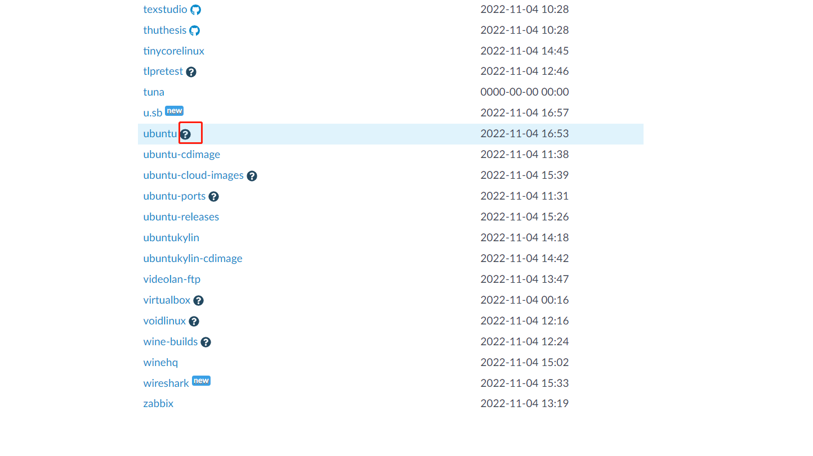

sudo ufw version
sudo apt-get install ufwsudo ufw disable其他:
sudo ufw enablesudo ufw default denysudo ufw allow smtp 允许所有的外部IP访问本机的25/tcp (smtp)端口sudo ufw allow 22/tcp 允许所有的外部IP访问本机的22/tcp (ssh)端口sudo ufw allow 53 允许外部访问53端口(tcp/udp)sudo ufw allow from 192.168.1.100 允许此IP访问所有的本机端口sudo ufw status系统中默认的镜像源可能访问不到, 需要手动修改镜像源.
cp /etc/apt/sources.list /etc/apt/sources.list.bak;vi /etc/apt/sources.list# 默认注释了源码镜像以提高 apt update 速度，如有需要可自行取消注释
deb https://mirrors.tuna.tsinghua.edu.cn/ubuntu/ focal main restricted universe multiverse
# deb-src https://mirrors.tuna.tsinghua.edu.cn/ubuntu/ focal main restricted universe multiverse
deb https://mirrors.tuna.tsinghua.edu.cn/ubuntu/ focal-updates main restricted universe multiverse
# deb-src https://mirrors.tuna.tsinghua.edu.cn/ubuntu/ focal-updates main restricted universe multiverse
deb https://mirrors.tuna.tsinghua.edu.cn/ubuntu/ focal-backports main restricted universe multiverse
# deb-src https://mirrors.tuna.tsinghua.edu.cn/ubuntu/ focal-backports main restricted universe multiverse
deb https://mirrors.tuna.tsinghua.edu.cn/ubuntu/ focal-security main restricted universe multiverse
# deb-src https://mirrors.tuna.tsinghua.edu.cn/ubuntu/ focal-security main restricted universe multiverse
# 预发布软件源，不建议启用
# deb https://mirrors.tuna.tsinghua.edu.cn/ubuntu/ focal-proposed main restricted universe multiverse
# deb-src https://mirrors.tuna.tsinghua.edu.cn/ubuntu/ focal-proposed main restricted universe multiverse
sudo apt-get update(如果执行失败, 尝试把https改为http试试)sudo apt-get upgradesudo apt update;sudo apt install openjdk-11-jdk;java -version;安装
sudo netstat -tap | grep mysql;sudo apt-get install mysql-server mysql-clientsudo netstat -tap | grep mysql修改root密码
sudo cat /etc/mysql/debian.cnfmysql -udebian-sysmaint -pinput_the_passworduse mysql;update mysql.user set authentication_string=password('123456') where user='root' and Host ='localhost';update user set plugin="mysql_native_password"; flush privileges;, 至此, 密码修改完成;使能外部访问
use mysql;;select host from user where user='root';发现确实限制了登录;update user set host = '%' where user = 'root';修改登录限制;sudo nano /etc/mysql/mysql.conf.d/mysqld.cnf, 修改其中的配置为bind-address = 0.0.0.0;mysql启停命令:
启动mysql：
方式一：sudo /etc/init.d/mysql start
方式二：sudo service mysql start
停止mysql：
方式一：sudo /etc/init.d/mysql stop
方式二：sudo service mysql stop
重启mysql：
方式一：sudo/etc/init.d/mysql restart
方式二：sudo service mysql restart
基于ubuntu20.04版本
enp0s3:stack@frog-VirtualBox:~$ ifconfig
enp0s3: flags=4163<UP,BROADCAST,RUNNING,MULTICAST> mtu 1500
inet 10.0.2.66 netmask 255.255.255.0 broadcast 10.0.2.255
inet6 fe80::a00:27ff:fe66:8323 prefixlen 64 scopeid 0x20<link>
ether 08:00:27:66:83:23 txqueuelen 1000 (Ethernet)
RX packets 130889 bytes 178169269 (178.1 MB)
RX errors 0 dropped 0 overruns 0 frame 0
TX packets 39846 bytes 3713094 (3.7 MB)
TX errors 0 dropped 0 overruns 0 carrier 0 collisions 0
lo: flags=73<UP,LOOPBACK,RUNNING> mtu 65536
inet 127.0.0.1 netmask 255.0.0.0
inet6 ::1 prefixlen 128 scopeid 0x10<host>
loop txqueuelen 1000 (Local Loopback)
RX packets 214 bytes 18192 (18.1 KB)
RX errors 0 dropped 0 overruns 0 frame 0
TX packets 214 bytes 18192 (18.1 KB)
TX errors 0 dropped 0 overruns 0 carrier 0 collisions 0
frog@frog-VirtualBox:~$ route -n
Kernel IP routing table
Destination Gateway Genmask Flags Metric Ref Use Iface
0.0.0.0 10.0.2.2 0.0.0.0 UG 100 0 0 enp0s3
10.0.2.0 0.0.0.0 255.255.255.0 U 100 0 0 enp0s3
169.254.0.0 0.0.0.0 255.255.0.0 U 1000 0 0 enp0s3
vim /etc/netplan/01-network-manager-all.yaml:# Let NetworkManager manage all devices on this system
network:
version: 2
renderer: NetworkManager
修改为:
network:
version: 2
renderer: NetworkManager
ethernets:
enp0s3: #配置的网卡名称
dhcp4: no #dhcp4关闭
dhcp6: no #dhcp6关闭
addresses: [10.0.2.66/24] #设置本机IP及掩码
optional: true
gateway4: 10.0.2.2 #设置网关
nameservers:
addresses: [114.114.114.114] #设置DNS
执行netplan apply
重启, 查看ifconfig可以发现修改成功
cd /etc/apt/cp -a sources.list sources.list.bk